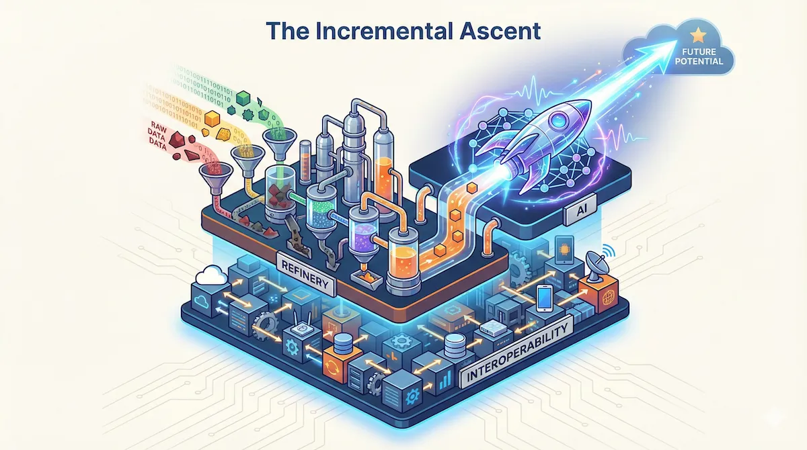

The EHS AI Launchpad: Introducing Intelligence Incrementally
December 5, 2025
Throughout this series, we've stripped away the marketing hype to reveal what actually works. You've seen why you can't run sophisticated models on broken infrastructure (the AI Readiness Gap). You've done the heavy lifting to connect EHS to the operational "mainland" of HR and Maintenance (Interoperability). And you've rolled up your sleeves in the EHS Data Refinery to turn messy reports into actual fuel.
If you've done the work, you now have something 90% of the market lacks: a governed, connected, and labeled dataset. You're finally ready for Phase 3: Introducing Intelligence Incrementally.
Most organizations, flush with excitement and clean data, attempt a "Big Bang" launch. They try to deploy a massive, all-encompassing predictive model that promises to predict "risk" across the entire enterprise.
This approach rarely survives first contact with the shop floor. I've watched projects that looked brilliant in boardroom demos collapse under the weight of real-world complexity. The model is too broad, the signals are too weak, and critically the workforce loses trust.
The shift is subtle but crucial: stop trying to build a "system", start growing a capability. A massive rollout plan won't work unless you shift tactics.
1. Narrow Scope, High Value
The most common mistake in Phase 3 is solving for "Safety" generically rather than solving a specific business problem. An AI that tries to learn everything ends up learning nothing.
You need a focused strategy. Find a single, high-impact use case that is narrow enough to be technically solvable but valuable enough to prove ROI immediately.
Here's what doesn't work: "We want to predict all injuries." It's too broad. The variables are infinite, the noise is deafening.
What works? Narrow, geometric problems. "We want to use Computer Vision to detect "Line of Fire" violations on Assembly Line 4." Why does this work? Clear rules (a person crossing a yellow line) that CV handles easily.
Or classification tasks: "We want to use NLP to auto-classify "Life-Saving Rule" violations in near-miss reports."
(Note: To demonstrate this exact capability, I developed a public Incident Classification Tool. It was trained on 10 years of OSHA severe injury reports. You can test it to see how machine learning models take a messy narrative and assign it a structured OIICS code.)
The Data Science Lens: Why These Work
From a statistical perspective, these aren't random choices. Computer Vision is unique because it bypasses the need for historical data cleaning. It learns from pixels, not your database. This makes it a perfect "Quick Win" to build momentum while you refine your core data assets. For geometric violations, it has a strong ground truth signal. A person is either inside or outside a yellow line. There's no ambiguity, no subjective interpretation. The false positive rate is low because the physics are clear.
Similarly, NLP classification for Life-Saving Rules requires only 500-1,000 labeled examples to reach 85%+ accuracy. Compare that to predictive models, which need 10,000+ incidents. Most organizations won't accumulate that much data for years. You're choosing battles you can win with the data you actually have.
How to Select Your Target
The question is often, "Which target do I pick?" Don't guess. Look at your previous work. Scan for the "High-Frequency / Low-Severity" category you identified during your Data Refinery phase. Where did you have the most clean, labeled data? That is your target. Do not try to launch AI on a risk category where your data quality was poor. If your "Slip/Trip" data was messy but your "LOTO" data was clean and standardized, start with LOTO.
The ROI Calculation
To get approval for this narrow scope, you don't need vague promises of "safer culture." You need a calculation.
Take the NLP Auto-Classification example. Instead of just saying it "saves time," run the actual numbers.
If your EHS specialists are paid $50/hour and spend just 10 hours a week manually reading, correcting, and tagging messy incident reports, that's $25,000 annually per specialist just for data entry. Think about what that means: your experts, the ones who should be walking the floor and catching hazards before they become incidents, are instead trapped behind a desk fighting with Excel.
Deploying a focused NLP model changes that equation. You're not just saving $25,000. You're buying back 500 hours a year of field presence. It's 500 hours of an expert coaching workers, spotting risks, and building the kind of safety culture that actually prevents injuries.
By narrowing the scope, you reduce the variables. If you can prove that the model works for one specific task, you earn the political capital to expand.
2. The Junior Officer: Human-in-the-Loop (HITL)
There is a fear that AI will replace the EHS professional. This is technically and practically impossible.
Let's be clear about what this tool actually is: a Junior Safety Officer, not a Safety Manager.
Like any junior officer, it's enthusiastic and tireless. It can read 10,000 reports in a second. But it lacks context. It misses nuance. It has no judgment. That's why it needs supervision—what we call the Human-in-the-Loop (HITL) process.
The Feedback Loop Workflow
Implementing HITL isn't a philosophy; it's a daily workflow. It looks like this:
- Prediction: The AI analyzes a new hazard report describing a "jammed conveyor belt." It predicts the category is "Slip/Trip" (Confidence: 60%).
- Review: The EHS expert sees this prediction on their dashboard. They see the error: The belt was slippery, but the hazard is mechanical.
- Correction: The expert clicks "Reject" and selects "Machine Guarding."
- The Learning: The AI doesn't just update the record; it updates its understanding. It learns that when "conveyor" and "jammed" appear together, "Machine Guarding" is the probable tag, even if the word "slippery" is present.
In a "set it and forget it" model, that error becomes a permanent flaw in your analytics. In a HITL model, every error is a training opportunity. You're effectively mentoring the AI, growing it from a Junior Officer into a Senior Analyst.
The Retraining Rhythm
Your model retrains automatically every month, incorporating all corrections from the HITL feedback loop. But there's a safety mechanism. The new model doesn't replace the old one automatically.
Instead, it runs in parallel for one week. Your EHS team sees predictions from both Model v1.2 and Model v1.3 side-by-side. If the new model shows clear improvement (higher accuracy, fewer expert corrections), you promote it. If it's worse, you roll back and investigate what went wrong in the training data.
This disciplined approach prevents the "catastrophic forgetting" problem where a retrained model suddenly loses knowledge it previously had because the new training data was skewed or incomplete. Think of it like studying for an exam by only reviewing last week's lecture notes while ignoring everything from weeks 1-5. You might do great on recent material but completely miss questions from the earlier material. The parallel validation is like taking practice tests that cover the full semester before the real exam. It catches knowledge gaps before they reach your workforce.
3. The "Glass Box": Moving from Prediction to Prescription
In the EHS Data Refinery, I noted that an AI that only predicts risk is just a fancy reporting tool.
- Prediction: "You will have 5 accidents next month." (Interesting, but useless).
- Prescription: "You have a high risk of guarding failure on Line 3 because maintenance is overdue." (Actionable).
Your Phase 3 deployment must avoid the "Black Box" problem. A Black Box spits out a number ("Risk Score: 85") but cannot tell you why. Operations leaders will ignore a Black Box. They need a "Glass Box", a transparent logic that shows the evidence. In data science, we call this "Feature Importance". It shows exactly which variables (OT, PMs, Training, etc.) contributed most to the risk score.
How to Build the Box
The good news is that your first AI model doesn't need to be a neural network. It can be what data scientists call a Deterministic Expert System.
In this stage, you don't ask the AI to guess the rules (Machine Learning); you give it the rules (Symbolic AI). You encode your expert knowledge—"Fatigue + Broken Machine = Danger"—into a logic structure the system can execute at scale. This isn't just a spreadsheet; it's the foundational logic layer that your future Machine Learning models will try to beat.
The logic is more sophisticated than it first appears. You take the interoperable data points you built in Phase 1 (Overtime from HR, Overdue PMs from Maintenance, and Training Gaps from LMS) and convert them to a 0-10 scale. But not linearly.
Risk isn't linear. An overtime rate of 10% is concerning. 20% is not twice as bad—it's exponentially worse because fatigue compounds cognitive errors. So we apply a risk curve: values 0-7 scale linearly, but 8-10 trigger exponential amplification (8→12, 9→16, 10→20).
Then the weighting: if Maintenance Reliability is your biggest killer (evidenced by past injury data), you give it 50% weight. Fatigue gets 30%. Training gets 20%.
If both Fatigue AND Maintenance are critical (≥7), we apply a 1.25x compound multiplier. Why? Because tired workers operating broken equipment isn't 1+1=2 risk. It's 1×1.25 risk. The hazards interact.
Now, when you calculate the score, you aren't just getting a random risk number like "8.0." You're getting the math behind it. You can see that 62% of that risk score is coming purely from the maintenance data, and if there's a compound effect active, you'll see exactly which combination of factors is driving the elevated risk.
That is your "Glass Box."
The Future: AI as the Muscle
The Deterministic System is the skeleton, but AI becomes the muscle. Right now, you manually set
the weights (e.g., Fatigue = 30%). In the future, a Regression Model will analyze
the labeled incident history you built in the Data Refinery. It will tell you: "Actually, looking at
5 years of data, Fatigue contributed to 62% of your accidents." The AI updates the weights for you
based on reality, not intuition.
Similarly, right now you manually score maintenance logs 1-10. In the future, the NLP Model you trained reads the logs and scores them automatically. The Glass Box remains the transparent framework, but AI gradually takes over the job of feeding it the right numbers.
When you put that on a dashboard, the conversation changes. You aren't telling a Plant Manager "Be careful." You are showing them that "Line 4 is high risk today because maintenance is overdue on Conveyor 3. If you clear that PM, the risk score drops by half."
That is actionable intelligence. It builds trust because the logic is visible, auditable, and undeniably linked to operational reality.
Interactive Glass Box Calculator
Step 1: Train Your Model (Set Weights)
Decide what matters most to your organization.
Step 2: Input Data (0-10 Scale)
Enter the current status of your operations.
The Difference in Action
See how the same risk score looks in two different systems:
STOP WORK IMMEDIATELY
Monitor all indicators.
4. The "False Positive" Paradox: Managing Expectations
You must prepare your stakeholders for the reality of probability. A traditional software system is binary: it works or it doesn't. An AI system is probabilistic. If your system beeps five times and nothing is wrong, the workforce will ignore it the sixth time. And that sixth time might be the accident. This creates a paradox: How do we catch every risk without driving everyone crazy with false alarms?
You have to make a choice. In data science, this is the trade-off between Precision (being right when you beep) and Recall (beeping every time there is a problem).
In safety, the ethical choice is clear: We optimize for Recall. We would rather flag three safe situations as risky than miss one single fatality precursor.
Setting the Threshold: A Real Example
Let's make this concrete. Your Glass Box model flags a work cell as "high risk" when the score exceeds 65/100. At this threshold, it correctly identifies 90% of the days that precede actual incidents (this is your Recall—you're catching 9 out of 10 real risks).
But it also triggers false alarms 40% of the time—meaning 4 out of 10 alerts are "false positives" where no incident actually occurs. Is that acceptable?
In manufacturing quality control, 40% false positives would be unacceptable. But in safety? Absolutely. Because the cost of the error types is asymmetric. A false positive costs you 30 minutes of investigation. A false negative (missed fatality precursor) costs you a life.
This is why we set the threshold at 65, not 80. At 80, we'd have fewer false alarms (15%), but we'd only catch 60% of real risks. We'd miss 4 out of 10 accidents. That trade-off is ethically untenable.
During your Shadow Mode period (the first 4 weeks), you'll tune this threshold based on your team's feedback. If they're drowning in false alarms, you might adjust to 70. If they're comfortable with the noise, you might even lower it to 60 for even better Recall.
The Cost of Being Wrong
| Error Type | What Happens | The Cost |
|---|---|---|
| False Positive | AI flags a safe situation as risky | Annoyance. The team investigates, finds nothing, and goes back to work. |
| False Negative | AI stays silent during a real hazard | Injury. The risk goes unnoticed, and someone potentially gets hurt. |
You have to tell the algorithm: "I would rather you flag three safe situations as risky than miss one single fatality precursor."
The "Shadow Mode" Contract
So, how do we optimize for Recall without destroying that trust?
Don't just turn the system on. Agree formally with Operations that for the first 4 weeks, the AI runs in the background. It sends alerts only to the EHS team, not the shop floor.
- The EHS Team validates the alerts (HITL)
- The System learns which alarms were real and which were noise.
- The Workforce isn't bothered until the system is tuned.
Conclusion: Your 90-Day Roadmap
This roadmap is your Launchpad. It is the specific sequence of operational steps that lifts your data off the ground.
You've built the foundation (interoperability). You've refined the data (governance, cleansing, labeling). Now you're ready to launch intelligence incrementally. Here's what the next 90 days look like:
Days 1-30: Select and Scope
- Week 1-2: Review your Data Refinery phase. Which risk category had the cleanest, most abundant data? That's your target.
- Week 3-4: Define success metrics. Not "implement AI model." Instead: "Reduce incident classification time from 15 minutes to 2 minutes" or "Achieve 85% accuracy on LOTO violation detection."
Days 31-60: Build and Test (Shadow Mode)
- Week 5-6: Deploy your first narrow-scope model (CV for geometric violations or NLP for report classification).
- Week 7-8: Shadow Mode. The AI runs in the background, sending alerts only to the EHS team. Validate every prediction. This builds your labeled dataset for retraining.
Days 61-90: Launch and Learn
- Week 9-10: Go live. The workforce sees the alerts. Expect skepticism. Document every false positive and explain why the trade-off favors Recall.
- Week 11-12: First monthly retrain. Incorporate all HITL corrections. Run parallel validation. Promote the new model if it outperforms.
The organizations that treat this as a static project will stay stuck in gap. But those that treat it as an evolving capability—starting small, obsessing over data quality, keeping the human expert at the center—will fundamentally change how their business thinks about safety. Not as a compliance burden, but as a competitive advantage built on data, transparency, and trust.